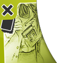
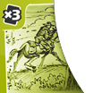

Gourde (DODGE CITY)
Regagnez un point de vie. Vous ne pouvez pas utiliser cette carte "in extremis" : ce n'est pas une carte BIÈRE.

Couteau (DODGE CITY)
[] à une distance de 1 ; la carte COUTEAU ne compte pas comme un BANG!.

Derringer (DODGE CITY)
[] à une distance de 1, plus une carte supplémentaire [

] ; la carte DERRINGER ne compte pas comme un BANG!.

Poivrière (DODGE CITY)
Fonctionne exactement comme un BANG!, mais ne compte pas comme un BANG!

Fusil à bisons (DODGE CITY)
Jouez cette carte sur n'importe quel joueur pour tirer un [] ; la carte BUFFALO RIFLE ne compte pas comme un BANG!.

Obusier (DODGE CITY)
Jouez cette carte au centre de la table pour un [] sur tous les autres joueurs ; la carte HOWITZER ne compte pas comme un BANG!

Plaque de fer (DODGE CITY)
Même effet que RATÉ ! [

].

Chapeau de cow-boy (DODGE CITY)
Même effet que RATÉ ! [
].

Sombrero (DODGE CITY)
Même effet que RATÉ ! [
].

Bible (DODGE CITY)
Même effet que RATÉ ! [
], mais cela vous permet aussi de tirer une carte supplémentaire [
].

French cancan (DODGE CITY)
Même effet que la carte COUP DE FOUDRE. En mode Normal, vous pouvez aussi jouer cette carte sur vous-même en la jouant au centre de la table.

Conestoga (DODGE CITY)
"Volez" [
] une carte à n'importe quel joueur. En mode Normal, vous pouvez aussi jouer cette carte sur vous-même en la jouant au centre de la table.

Pony Express (DODGE CITY)
Tirez trois cartes de la pioche.